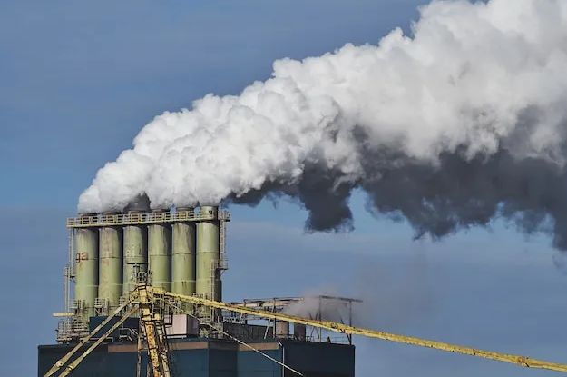
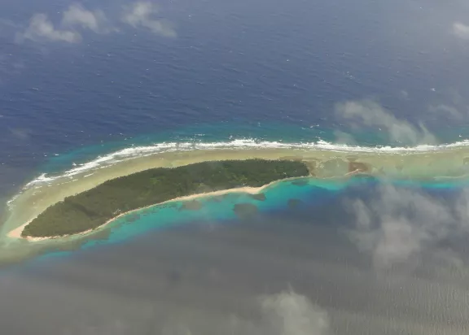

¿Qué es el Cambio Climático?
El cambio climático se refiere a los cambios a largo plazo de las temperaturas y los patrones climáticos. Estos cambios pueden ser naturales, debido a variaciones en la actividad solar o erupciones volcánicas grandes. Pero desde el siglo XIX, las actividades humanas han sido el principal motor del cambio climático, debido principalmente a la quema de combustibles fósiles como el carbón, el petróleo y el gas.
La quema de combustibles fósiles genera emisiones de gases de efecto invernadero que actúan como una manta que envuelve a la Tierra, atrapando el calor del sol y elevando las temperaturas.
Las emisiones principales de gases de efecto invernadero que provocan el cambio climático son el dióxido de carbono y el metano. Estos proceden del uso de la gasolina para conducir un coche o del carbón para calentar un edificio, por ejemplo. El desmonte de tierras y bosques también puede liberar dióxido de carbono. La agricultura y las actividades relacionadas con el petróleo y el gas son fuentes importante de emisiones de metano. La energía, la industria, el transporte, los edificios, la agricultura y el uso del suelo se encuentran entre los principales emisores.
Efectos del Cambio Climático
Según el Informe de Riesgos Globales 2021 del Foro Económico Mundial, la incapacidad de mitigar y adaptarse al cambio climático es el riesgo “más impactante” que enfrentan las comunidades de todo el mundo, incluso más que las armas de destrucción masiva y las crisis hídricas. Culpe a los efectos dominó: a medida que el cambio climático transforma los ecosistemas globales, todo se ve afectado, desde los lugares en los que vivimos hasta el agua que bebemos y el aire que respiramos.
Y aunque el cambio climático afecta a todos de alguna manera, es indiscutible que sus impactos más negativos son soportados de manera desproporcionada por ciertos grupos: mujeres, niños, personas de color, comunidades indígenas y los económicamente marginados. El clima es una cuestión de derechos humanos.
Algunos efectos del cambio climatico son:
- Clima extremo
- Aire sucio
- Ecosistemas en peligro
- Aumento del nivel del mar
A medida que la atmósfera de la tierra se calienta, acumula, retiene y deja caer más agua, lo que cambia los patrones climáticos y hace que las áreas húmedas sean más húmedas y las áreas secas más secas. Las temperaturas más altas empeoran y aumentan la frecuencia de muchos tipos de desastres, incluidas tormentas, inundaciones, olas de calor y sequías. Estos eventos pueden tener consecuencias devastadoras y costosas, al poner en peligro el acceso al agua potable, exacerbando incendios forestales descontrolados, daños a la propiedad, creando derrames de materiales peligrosos, contaminando el aire y provocando la pérdida de vidas.
La contaminación del aire y el cambio climático están indisolublemente vinculados, y uno agrava al otro. Cuando la temperatura de la tierra aumenta, nuestro aire no solo se ensucia más, y los niveles de esmog y hollín aumentan en consecuencia, sino que también se llena de contaminantes más alergénicos, como el moho circulante (gracias a condiciones de mayor humedad debido al clima extremo y más inundaciones) y el polen (debido a temporadas de polen más largas y fuertes).
El cambio climático está presionando a los animales salvajes a adaptarse rápidamente a hábitats cambiantes. Muchas especies buscan climas más fríos y mayores altitudes, alterando sus comportamientos estacionales y ajustando sus patrones tradicionales de migración. Estos cambios pueden transformar fundamentalmente a ecosistemas enteros y a las intrincadas redes de vida que dependen de ellos. Como resultado, según un estudio de 2020, un tercio de todas las especies de animales y plantas podrían enfrentarse a la extinción para 2070.

El Ártico se está calentando dos veces más rápido que cualquier otro lugar del planeta. A medida que sus capas de hielo se derriten en los mares, nuestros océanos están camino a subir de 0,95 a 3,61 pies a finales de este siglo, lo que amenazaría los ecosistemas costeros y las zonas bajas. Las naciones insulares enfrentan un riesgo particular, al igual que algunas de las ciudades más grandes del mundo, incluidas la ciudad de Nueva York, Miami, Mumbai en India y Sydney en Australia.
Consecuencias del cambio climático para el planeta
El calentamiento global provocado por el cambio climático es cada vez más evidente. El IPCC menciona como consecuencias “la desertificación, la degradación de la tierra, la falta de seguridad alimentaria y los flujos de gases de efecto invernadero en los ecosistemas terrestres”, entre otros.
En cuanto a los efectos directos, los océanos se han calentado, la cantidad de hielo y nieve ha bajado mientras el nivel del mar ha subido 19 centímetros de 1901 a 2010. Se calcula que, en 2065, el nivel medio habrá crecido entre 24 y 30 centímetros y de 40 a 63 en 2100, en relación con el periodo 1986-2005. Esta tendencia parece inevitable, ya que, según el IPCC, las consecuencias del cambio climático “persistirán durante muchos siglos, incluso si se detienen las emisiones”. En otras palabras, el proceso se ha puesto en marcha y se puede paliar, pero no parar en seco su inercia.
De acuerdo con estos expertos, los efectos pueden del cambio climático ser irreversibles en algunos puntos del planeta como la selva amazónica o la tundra asiática, en donde el calentamiento y la pérdida de humedad están causando modificaciones acusadas, sin retorno.
Bibliografia
De Ecología y Cambio Climático, I. N. (s. f.). ¿Qué es el cambio climático? gob.mx. https://www.gob.mx/inecc/acciones-y-programas/que-es-el-cambio-climatico
Communications. (2024, 24 octubre). ¿Qué es el cambio climático? Estas son las causas y así nos afecta. BBVA NOTICIAS. https://www.bbva.com/es/sostenibilidad/que-es-el-cambio-climatico-causas-y-como-nos-afecta/
El cambio climático: causas, efectos y remedios. (2024, 25 junio). https://www.enelgreenpower.com/es/learning-hub/transicion-energetica/cambio-climatico-causas-consecuencias